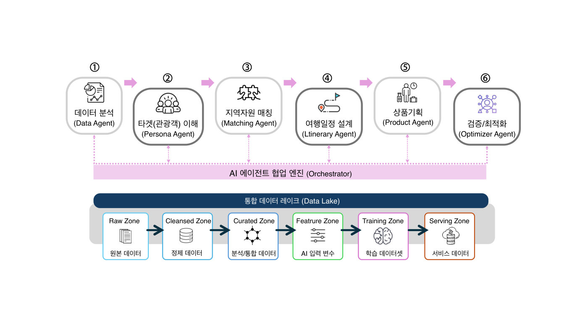
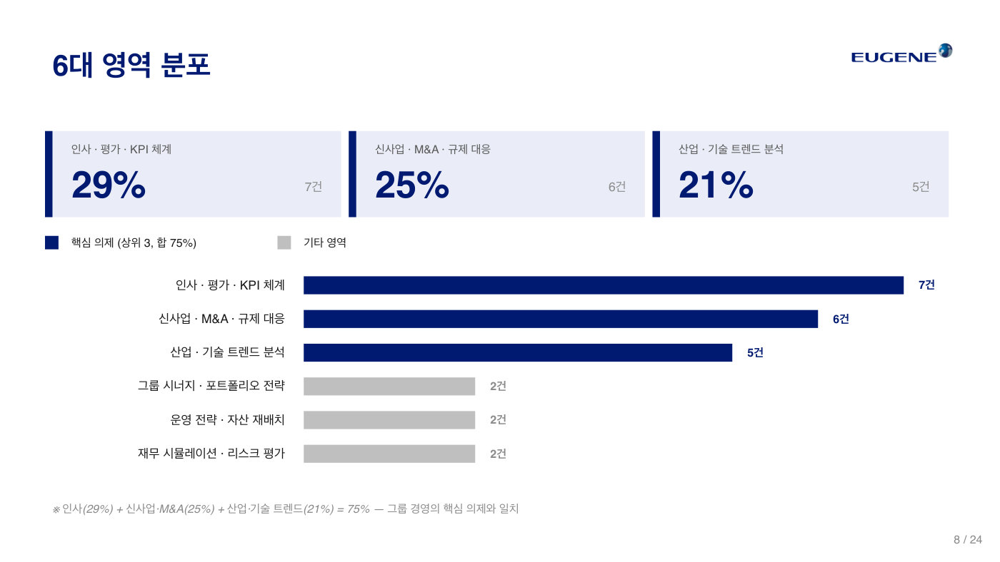
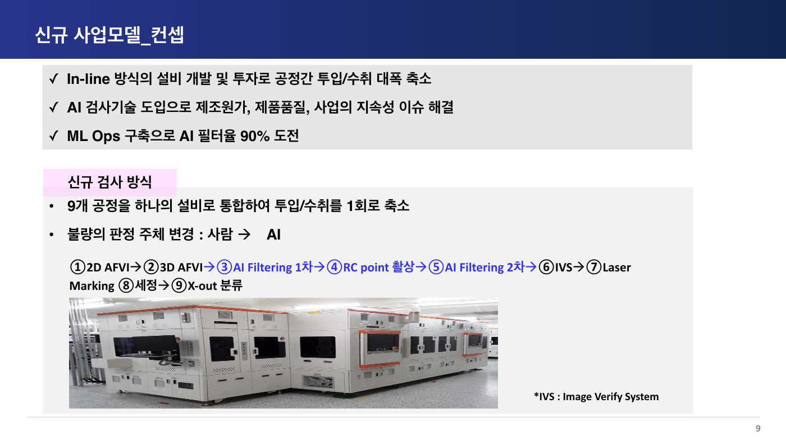

우수 프로젝트 14선, 쉽게 읽기
① 경영자가 직접 손을 댔다. 회장·대표·임원이 스스로 프롬프트를 짜고 바이브 코딩으로 시제품을 만들며 조직 전체를 움직였다.
② 자기 사업의 진짜 문제에서 출발했다. 투자 심사, 불량 검사, 통관 서류, 중고거래 사기처럼 각자의 현장에서 가장 아픈 문제를 골라 AI로 풀었다.
③ 숫자로 증명했다. 거래액 2배, 검사 자동화 90%, 구독 비용 80% 절감처럼 측정 가능한 성과를 제시했고, 남은 한계도 숨기지 않았다.
④ 내부 효율화로 끝나지 않았다. 현장에서 검증한 시스템을 SaaS나 신사업으로 키워 다음 단계로 확장하고 있다.

어떤 문제가 있었나
벤처캐피탈은 유망한 스타트업을 골라 투자하고, 그 회사가 커지면 수익을 얻는 회사다. 카카오인베스트먼트는 심사역(투자할 회사를 검토하는 전문가) 9명의 개인 실력에 의존해 왔는데, 투자의 절반 이상이 해외 건이라 일주일 안에 결정하지 못하면 좋은 기회를 다른 투자자에게 빼앗기곤 했다. 해외에서는 이미 10만 건이 넘는 투자 데이터를 학습한 AI로 2주, 빠르면 24시간 만에 투자를 결정하는 회사가 나왔고, AI 심사역이 초기 심사의 90%를 맡아 3일 안에 결과를 통보하는 국내 회사도 등장했다. 그런데 정작 회사 안을 들여다보니 자료가 엑셀, 이메일, 사내 게시판, PPT에 뿔뿔이 흩어져 있어서(데이터 사일로) AI가 배우거나 가져다 쓸 수가 없는 구조였다.
어떻게 풀었나
발표자는 투자 발굴부터 회수까지 회사의 모든 업무를 표로 쪼개서 분석한 뒤, 효과가 크고 당장 만들 수 있는 것부터 9개의 AI 모듈(포트폴리오 대시보드, 투자 기회 탐색기, 계약서 검토 등)을 만들었고 절반 이상이 이미 시제품 완성 단계다. 원칙은 "사람이 AI에 맞춘다"였다. 회의에서 누가 말했는지 AI가 구분하는 기술(화자 분리)이 15명 회의에서는 아직 부족하자 기술을 기다리는 대신 핵심 인물 서너 명만 구분하도록 회의 방식 자체를 바꿨고, 찬성과 반대만 적던 투자 투표도 항목별 점수를 매기는 방식으로 바꿔 AI가 배울 수 있는 데이터를 남겼다. 특히 재미있는 것은 AI 레드팀(일부러 반대 의견을 내는 역할)이다. 사람이 반대 역할을 맡으면 다음에 자기도 심사받을 처지라 순한 의견만 냈는데, AI에게 시키자 봐주지 않는 "진짜 매운맛" 반대 의견이 나와 심사가 훨씬 깐깐해졌다.
무엇이 달라지나
목표는 심사역 1인당 검토하는 투자 후보 20배, 투자심의위원회에 올라가는 안건 3배, 의사결정에 걸리는 기간 3분의 1이다. 1년 안에 AI가 초기 후보의 70% 이상을 걸러내고 평균 결정 시간을 1주일 안으로 줄이는 것이 계획이다. 재무팀이 분기마다 일주일씩 걸려 만들던 보고 자료는 대시보드가 완성되면 실시간으로 나온다. 나아가 8월에는 일본 투자를 전담하는 가상 법인을 단 2명이 AI와 함께 운영하는 실험까지 준비하고 있는데, 발표자는 AI 덕분에 앞으로 한두 명이 운영하는 특별한 투자회사가 세계 곳곳에서 나올 것이라고 내다봤다.

어떤 문제가 있었나
변호사의 일은 대부분 서류다. 그런데 문서 검토나 개인정보 가리기 같은 단순 반복 작업이 전체 업무의 60% 이상을 차지해, 정작 중요한 일인 법률 쟁점 분석과 소송 전략 짜기에 쓸 시간이 부족했다. 손으로 하다 보면 실수도 생기고 처리 속도도 느려진다. 기존 국내 리걸테크(법률+기술 서비스)는 판례 검색 수준에 머물러 있어서 이 문제를 풀어 주지 못했다. 대형 로펌은 쌓아 둔 자료를 절대 공개하지 않고, 개인정보 문제로 법원의 판례 전면 공개도 미뤄지고 있어 좋은 학습 데이터 자체가 부족한 상황이었다.
어떻게 풀었나
발표자는 10년 이상 경력의 변호사 8명과 함께 로펌을 세우면서, 자매 회사로 AI 개발사 이그니스 랩을 만들어 개발자들과 손을 잡았다. 시스템의 흐름은 이렇다. 소송 서류 PDF를 올리면 OCR(이미지 속 글자를 읽어내는 기술)로 텍스트를 뽑고, 개인정보를 자동으로 가린 뒤(비식별화), 벡터 DB(뜻이 비슷한 문서를 찾아 주는 저장소)에 넣어 비슷한 사례와 쟁점을 검색한다. 핵심은 그다음이다. 원고 역할은 ChatGPT, 피고 역할은 Claude, 판사 역할은 Gemini가 맡아 다섯 번을 서로 반박하며 공방을 벌인 뒤 판결까지 예측한다. 우리가 원고라면 상대편이 들고나올 수 있는데 미처 생각 못 한 주장을 미리 찾아내는 것이 목적이다. 다만 AI에게 다 맡기지 않고, 무엇을 가릴지 정하는 단계와 결론 검증에는 변호사가 반드시 개입하는 구조로 설계했다.
무엇이 달라지나
발표자가 직접 맡아 실제 1심 판결까지 받은 사건의 서류를 전부 넣고 돌려 봤더니, 초반에는 결론이 뒤집히는 오류도 있었지만 데이터를 정리한 뒤에는 실제 판결과 비슷한 결론과 이유가 나왔다. 반복 문서 처리 시간을 80% 줄여 연 1,200시간을 아끼고 업무 효율을 3배 이상 올리는 것이 목표인데, 발표자는 "근거는 저희의 느낌"이라고 솔직하게 인정해 웃음을 줬다. 당사자 이름만 가리면 되는 줄 알았다가 법무법인 이름 같은 정보가 그대로 노출된 시행착오도 있어서, 어디까지 가릴지 기준을 만드는 것이 남은 숙제다. 3년 계획으로 사내 시험 운영에서 시작해 판례 서비스 연동과 보안 인증을 거쳐, 중소형 로펌에 파는 구독형 서비스로 키울 예정이다.

어떤 문제가 있었나
여행 상품은 특허를 낼 수 없다. 잘 팔리는 상품을 만들어도 경쟁사가 금방 똑같이 따라 하기 때문에 개인 고객 상대 장사로는 방어가 안 된다. 그래서 발표자는 상품 기획은 AI에게 맡기고 인간은 영업에 집중한다는 전략을 세우고, 회사가 직원에게 주는 복지 포인트(연말까지 써야 하는 회사 지급 포인트)로 여행 상품을 파는 기업 시장을 겨냥했다. 그런데 GPT에게 제주 2박 3일 일정을 짜 달라고 하면 겉보기엔 그럴듯한 계획이 나오지만, 지도에 얹어 보면 총 이동거리 200km, 여행 내내 운전만 하는 동선이 나온다. AI가 제주도를 하나의 점처럼 인식해서 섬 전체를 훑어야 좋은 답이라고 착각하기 때문이고, 걸어 들어가는 폭포를 배 타고 가는 곳으로 소개하는 엉터리 답(할루시네이션)도 섞여 있었다. 결국 일반 AI를 그대로 믿고 쓸 수는 없다는 것이 출발점이었다.
어떻게 풀었나
설계는 2층 구조다. 위층에는 데이터 분석, 손님 성향 파악, 일정 설계 같은 역할을 나눠 맡은 6개의 AI 에이전트(스스로 일하는 AI 일꾼)를 두고, 아래층에는 회사의 모든 데이터를 한곳에 모아 흐르게 하는 통합 데이터 레이크를 놓았다. 발표자는 에이전트 개발보다 이 데이터 호수를 만드는 데 시간이 훨씬 오래 걸린다는 것을 몸으로 확인했다. 실제로 쌓은 자산은 어마어마하다. ① 화장실, 병원, CCTV 같은 안전·편의 정보 58,989개(세부 항목까지 따지면 약 70만 개) ② '화사하다', '향기롭다' 같은 감성 단어까지 붙인 풍경 사진 38,620장 ③ 휠체어로 갈 수 있게 노면 상태와 경사까지 잰 무장애 관광지 78곳의 360도 영상 ④ 숙소·식당 등 상권 정보 6,669건과 건물 출입문 좌표 3,245개 ⑤ 여행지 1,400곳을 글로 정리한 스크립트다. 여기에 '비가 오면 어떤 관광지가 위험한가' 같은 관계를 연결한 지식그래프(정보를 거미줄처럼 연결한 데이터베이스)까지 만들었다. 그리고 완전 자동화 대신, 축제 찾기부터 상품 소개서 완성까지 AI와 사람이 일곱 번 주고받으며 함께 만드는 방식을 택했다.
무엇이 달라지나
이렇게 해서 '가족과 함께하는 힐링 제주 3박 4일' 같은 수채화풍 상품 소개서가 실제로 나왔다. 아이가 있는 가족이라는 조건을 이해해 아이가 좋아할 스누피가든을 골라 넣고 동선 지도까지 완성해, 이 정도면 영업할 수 있겠다는 내부 평가를 받았다. 목표 시장은 국내 45조 원 규모의 기업 복지 시장, 그중에서도 지정된 쇼핑몰에서만 포인트를 써야 하는 약 3조 원 시장이다. 복지몰의 여행 상품은 리조트 예약 하나뿐일 만큼 단조로워서, 지역 축제와 묶은 색다른 여행으로 파고들 틈이 크다고 본 것이다. 쌓아 놓은 데이터 자체도 돈이 되어 ETRI(한국전자통신연구원), 인천관광공사 등과 협약을 맺고 다른 지역의 데이터 구축 사업으로 확장하고 있다. 발표자의 결론은 명확하다. 데이터가 먼저고, 사람과 AI가 주고받은 기록을 쌓은 다음에야 진짜 AI 에이전트로 갈 수 있다는 것이다.

어떤 문제가 있었나
삼우종합건축사무소는 올해 창립 50주년을 맞은 건축 설계 회사다. 그동안 쌓인 예산서, 시방서(공사 방법을 적은 문서), 준공 문서가 72.5TB, 건수로 2천만 건에 이르는데, 오래된 자료 창고는 찾기도 어려우면서 유지 관리비만 연 2억 원 가까이 들었다. 그래서 먼저 RAG(질문을 받을 때마다 AI가 문서를 검색해서 답을 만드는 방식)를 6개월간 운영해 봤는데 결과는 냉정했다. 건축 설계 문서는 프로젝트마다 구성이 비슷해서 '피난 동선' 같은 키워드를 검색하면 비슷한 문서가 100개씩 쏟아졌고, AI가 그중 아무거나 골라 쓰다 보니 같은 질문에도 매번 다른 답이 나왔다. 검색과 요약을 반복하느라 AI 사용료도 절감 효과를 넘어섰다.
어떻게 풀었나
발표자는 발상을 바꿨다. 질문이 올 때마다 검색하는 대신, AI가 미리 원본 문서를 읽고 잘 정리된 백과사전(LLM Wiki)을 별도로 써 두게 한 것이다. 원본 문서는 절대 고치지 못하게 잠가 두고, AI는 주말 같은 한가한 시간에 피난·방화·주차 같은 주제별 정리 페이지와 실무 체크리스트를 만들어 계속 갱신한다. 질문이 오면 백과사전에서 먼저 찾고, 없을 때만 기존 RAG 검색으로 넘어간다. 2천만 건을 전부 정리하는 것이 아니라 자주 쓰이는 0.025~0.25%만 골라 페이지로 만들고, 직원들의 사용 패턴에 따라 정리 우선순위가 자동으로 바뀐다. 보안도 처음부터 설계했다. 삼성전자 반도체처럼 자료 반출을 금지하는 고객 데이터는 외부 AI에 보내지 않고 사내 GPU 서버 3대에서 Llama, Qwen 같은 공개 모델로만 처리하며, 부서·팀·개인별 열람 권한에 따라 검색 결과 자체가 걸러진다.
무엇이 달라지나
"지하 주차장 피난 계단 검토 때 뭘 봐야 하나"라고 물으면 체크리스트 페이지가 나오고, 각 항목이 건축법 시행령 PDF의 몇 페이지, 사내 지침의 몇 번째 문단에서 왔는지까지 추적된다. 선배 건축사는 의심되는 항목만 원문 클릭 한 번으로 확인하면 된다. 어느 AI 모델이 어떤 원문을 보고 답했는지 5단계로 기록되기 때문에, 2026년 1월 시행된 AI 기본법(AI 사용의 투명성과 책임을 요구하는 법)에도 대응할 수 있다. 3년간 총비용 약 5.4~7.2억 원에 연 3.3억 원어치의 업무 시간 절약 효과를 기대하며, 올 상반기에 첫 버전을 완성해 하반기 사내 도입을 목표로 한다. 2028년에는 이 시스템을 다른 설계 회사에 파는 사업까지 구상하고 있다.

어떤 문제가 있었나
남도마켓은 남대문·동대문 도매 상인이 상품을 올리면 전국의 소매 가게 사장님들이 보고 대량으로 사 가는 B2B(기업 간 거래) 플랫폼이다. 그런데 발표자가 팀원들과 107개 가게를 찾아가 2시간씩 인터뷰해 보니 "아직 상품이 많이 없다"는 답이 돌아왔고, 한 달치 검색어 14만 개를 전 직원이 직접 검색해 확인해 보니 정말 상품이 없었다. 원인을 파고들자 두 가지가 나왔다. 첫째, 상품을 올리는 도매 상인이 대부분 50~70대인데 사진·카테고리·색상·소재·설명을 전부 손으로 입력해야 해서 매장에 걸린 상품 200~300개를 올리는 것이 사실상 불가능했다(전체 문제의 70%). 둘째, 상품이 있어도 검색어와 제목이 정확히 일치해야만 나오는 낡은 검색 방식 때문에 검색에서 빠졌다(30%). "왜 등록 안 하시냐"고 묻자 돌아온 답은 "너 같으면 쓰겠냐"였다.
어떻게 풀었나
상인들이 "사진 한 장은 올릴 수 있다"고 한 말에서 출발했다. 핸드폰으로 찍은 사진 한 장을 올리면 AI가 약 15초 만에 상품명·카테고리·색상·소재·설명을 알아서 채워 주고, 가격만 상인이 직접 입력하는 등록 시스템을 만든 것이다. 회원가입도 없애서 사업자등록번호와 휴대폰 번호만 넣으면 바로 시작된다. 놀라운 점은 개발 기간인데, AI에게 말로 지시해 프로그램을 만드는 바이브 코딩으로 코딩 3일, 상인 검증 4일, 테스트 3일, 총 10일 만에 실제 서비스로 내놨다. 검색 문제는 하이브리드 검색으로 풀었다. 단어가 정확히 일치해야 찾아 주는 기존 방식(BM25)에 단어의 의미를 숫자로 바꿔 비슷한 뜻까지 찾아 주는 AI 임베딩을 결합해, "맨투맨"을 검색하면 "스웨트셔츠"도 나오고 "가을 데이트 룩" 같은 말로도 상품을 찾을 수 있게 했다. 'ㅁㅌㅁ' 같은 초성 입력, 오타 교정, 자동완성에 사진으로 찾는 이미지 검색까지 붙였는데, 팀원 제안으로 가볍게 넣은 이미지 검색이 지금은 전체 검색의 4분의 1을 차지한다.
무엇이 달라지나
새로 등록되는 상품이 주 1,000개에서 2,000개로 119.5% 늘었고, 등록 담당 직원에게 월 250~300만 원을 쓰던 도매상들은 그 비용을 아끼게 됐다. 200억 선에 머물던 월 거래액은 도입 두 달 만에 553억으로 2배 넘게 뛰었다. 직원 26명, 투자금 27억 원으로 직원 1인당 연 153억 원어치 거래를 만들어 내는데, 직원 189명에 800억 원을 투자받은 업계 1위(1인당 31억)의 5배 수준이다. 성공을 본 배송팀·세일즈팀까지 전 직원이 바이브 코딩을 배워 4개월간 36개 프로젝트를 만들었고, 잘 만들면 월급도 오른다. 발표 전날에는 50억 원 투자 유치가 확정됐고, 앞으로는 영수증 사진과 음성만으로 주문·정산까지 처리하는 도매 시장의 운영체제(OS)가 되는 것이 목표다.

어떤 문제가 있었나
전기차 충전기나 공장 기계가 고장 나면 관제 화면에는 대부분 '통신 장애'라고만 뜬다. 운영사, 제조사, 통신사, 시공사 중 누가 고쳐야 할지 몰라 일단 사람이 출동하는데, 한 번 나가는 데 10~20만 원이 든다. 가보면 멀쩡하거나, 다른 회사 일이라며 넘겨서 또 출동하거나, 리셋 버튼만 누르고 오는 일이 반복됐다. 새는 전기도 문제였다. 작년에 지어진 화성의 최신 자동차 공장은 연간 전기요금이 1,200억 원 규모인데, 아무도 일하지 않는 휴일에도 3.5만kW의 전기가 흐르고 그 이유를 공장 스스로도 몰랐다. 배승환 대표는 이렇게 산출물에 아무 도움이 안 되는데 습관적으로 새는 전기에 '무용 전력'이라는 이름을 붙였다.
어떻게 풀었나
파일러니어는 뇌파로 사람의 수면 상태를 읽고 심전도로 심장을 진찰하듯, 기계에 흐르는 전력 파형을 분석해 센서를 추가로 달지 않고도 기계의 상태를 진단하는 가상 계측 AI를 만든다. 고장 유형별 판단 근거를 지식그래프(원인과 근거를 그물망처럼 정리한 지도)로 정리하고, 사람 눈에는 겹쳐 보이는 파형을 7차원 공간에서 분류해 정확도 84~98.2%, 계산 시간 0.3초 이내를 달성했다. 이 스마트미터를 서울대 건물에 달았더니 밤새 꺼지지 않는 기기들이 알람으로 잡혔고, 교수들에게 알려주자 곧바로 전기가 12% 절감됐다. 대기 모드 PC를 실제로 재보니 요금에 안 잡히는 무효 전력(일은 안 하고 전선만 오가는 전기, 맥주로 치면 거품)이 유효 전력의 125배나 됐고, 절감 모듈을 붙이면 탄소 배출을 시간당 18.75g에서 1.88g으로 줄일 수 있었다. 이 결과를 들고 직접 KT를 찾아가 라우터와 셋톱박스의 대기 전력을 줄이는 40억 원 프로젝트를 만들어냈다.
무엇이 달라지나
한국전기안전공사, 서울대 등이 참여하는 2,000억 규모 컨소시엄에서 200억 원짜리 '전기설비 원격점검' 과제를 수주했고, 화성 자동차 공장에서는 1.5억 원 유료 실증(돈을 받고 하는 기술 검증)이 진행 중이다. 회사 안의 변화도 컸다. 전 직원에게 Claude Code 구독을 지원했지만 처음에는 AI 쓴 걸 숨기고 자기 말투로 다시 쓰느라 시간을 2배로 쓰거나, 구조를 모른 채 AI에 통째로 맡겨 수정이 불가능해지는 시행착오를 겪었다. '회사 생산성'이 아니라 '개인의 성장'을 위해 쓰라고 목표의 틀을 바꾸자 참여율이 크게 올랐고, 규칙이 명확한 연구 행정과 회계 자동화에서는 확실한 성공 사례가 나왔다. 발표는 AI를 도구가 아닌 문화로 만드는 중이라는 말로 마무리됐다.

어떤 문제가 있었나
유진그룹은 레미콘(건물 지을 때 쓰는 굳지 않은 콘크리트)부터 증권, 물류, 방송까지 50여 개 회사를 거느린 큰 그룹이다. 회장에게는 오랫동안 풀리지 않는 두 가지 질문이 있었다. 앞으로 어떤 사업을 해야 하는가, 그리고 그 사업을 이끌 사람은 어떻게 찾는가이다. 예전에는 이 답을 얻으려고 맥킨지나 BCG 같은 유명 컨설팅 회사(기업의 고민을 대신 분석해 주는 전문 회사)에 수백억 원을 썼다. 15년 전 증권사를 인수할 때는 60억 원을 주고 자문을 받았는데 지나고 보니 좋은 답이 아니었다. 컨설턴트도 미래는 모른다는 것을 깨달은 것이다.
어떻게 풀었나
70대의 회장은 컨설팅 회사에 맡기는 대신 생성형 AI에게 직접 물어보기로 했다. 그것도 하나가 아니라 Grok, Perplexity, Claude, 그룹이 자체 개발한 AI 에이전트까지 4가지를 용도별로 나눠 쓰면서 한 AI의 답을 다른 AI로 다시 검증했다. 4월의 어느 날에는 4시간 반 동안 한자리에서 24건을 연달아 질문했고, 그날 이후 매일 24건 이상을 스스로 질의하는 습관이 생겼다. 질문 내용을 분류해 보니 인사(사람 뽑고 평가하는 일) 29%, 신사업과 M&A(다른 회사를 사는 것) 25%, 산업 트렌드 21%로, 상위 3개가 75%를 차지해 그룹 경영의 핵심 고민과 정확히 일치했다. 저탄소 콘크리트 배합 비율 같은 세부 기술까지 꼬리에 꼬리를 물고 파고들다 몇 시간을 보내기도 했다.
무엇이 달라지나
결과는 놀라웠다. AI가 벤치마크로 찾아준 미국 물류 회사 Penske가 미디어 사업까지 하는 것을 보고 글로벌 미디어사 인수를 검토하기 시작했고, 결국 엘르와 에스콰이어를 보유한 미국 허스트 그룹과 발표 전날 LOI(인수 협상을 시작하자는 약속 문서)를 체결했다. 10년째 막혀 있던 레미콘 공장 스마트팩토리 사업은 6개월 만에 실행이 가시화됐고, 증권사에는 ETF 상품 설계를 바로 지시했으며, 모듈러 주택(공장에서 미리 만들어 조립하는 집) 사업 진출과 공장 재배치도 결정했다. 회장은 AI의 실력을 최정예 컨설턴트 6명이 24시간 회장 전속으로 일하는 수준이라고 평가했다. 다만 회사 내부 데이터를 못 보고 검토 결과가 쌓이지 않는 한계도 확인해, 그룹 전용 AI 에이전트 시스템을 만드는 계획을 세웠다. 심사위원은 최고 의사결정자가 변하면 조직 전체가 이렇게 빨리 변한다는 증명이라고 평가했다.

어떤 문제가 있었나
포스코기술투자는 포스코가 100% 지분을 가진 CVC(대기업이 유망 스타트업에 투자하는 벤처 투자회사)로, 운용 자산 1~2조 원에 투자한 회사만 400개가 넘는 국내 최대 규모다. 그런데 좋은 스타트업을 찾는 일(딜소싱)은 여전히 심사역 개인의 인맥과 명함에 기대는 방식이었다. 사람 네트워크에 의존하니 정보가 한쪽으로 쏠리고, 해외 소식은 시차 때문에 이미 소문난 회사에 뒤늦게 들어가게 되며, CES 같은 해외 전시회를 직접 다니자니 사람과 비용이 많이 든다. 발표자는 2019년 마이크로소프트가 제품도 없던 OpenAI에 남들보다 먼저 10억 달러를 투자해 거대한 지분을 선점한 사례를 들며, 투자에서는 남들이 모를 때 데이터로 확신을 얻어 먼저 깃발을 꽂는 것이 최고의 수익률이라고 진단했다.
어떻게 풀었나
투자의 세 단계인 발굴, 심사, 사후관리 전부에 AI를 붙이는 설계를 내놨다. 발굴 단계에서는 AI 에이전트가 글로벌 벤처 데이터베이스와 기술 블로그를 24시간 훑으며, 투자 유치가 공식화되기 전의 초기 신호(Pre-signal)를 감지해 알려준다. 심사 단계에서는 포스코 전용 AI에 그룹 전략을 학습시켜 다섯 가지 축(포스코 사업과의 궁합, 기술 성숙도, 국제 규제 리스크, 창업팀과 시장성, 재무성)으로 점수를 매기는 Synergy Scoring을 만들었다. 실제 투자 2건으로 검증도 했다. 미국의 휴머노이드 로봇 스타트업에는 그룹이 함께 300만 달러를 투자했는데, AI 도구였다면 창업 2개월 만에 창업팀을 포착했을 것이고 투자 심사 초안도 30분 만에 나온다는 계산이다. 저탄소 제철 스타트업은 AI 채점 결과 종합 83.6점으로 투자 권장이 나왔고, 실제 심사 결론과도 일치했다. 발표 형식부터 남달랐는데, 발표 자료를 학습시킨 AI(Notebook LM)가 만든 팟캐스트 음성이 발표의 3분의 1을 대신 진행했다.
무엇이 달라지나
딜 검토에 걸리는 시간이 수일에서 수시간으로 줄고, 연간 200건 이상을 걸러내며 심사 업무의 80% 이상을 자동화하는 것이 목표다. 400개 넘는 투자 회사끼리 시너지를 AI로 짝지어, 로봇 회사의 로봇을 제철 스타트업의 위험한 공정에 투입하는 식으로 1+1을 3으로 만드는 구상도 있다. 다만 결론은 AI 만능론이 아니다. 1960년대에 AI가 투자 심사를 했다면 세계 최빈국의 갯벌에 제철소를 짓겠다는 포항제철 계획은 성공 확률 0%로 탈락했을 것이다. AI가 99%의 투자 건을 걸러주더라도, 데이터가 없는 곳에 베팅하는 창업가의 똘끼와 집념을 알아보는 마지막 1%의 판단은 사람이 지켜야 한다는 것이 발표의 결론이었다.

어떤 문제가 있었나
홍보 회사 직원(AE, 고객 기업의 언론 홍보를 대신해 주는 담당자)의 10가지 업무 중 5개는 매일 똑같이 반복된다. 아침마다 고객 관련 뉴스를 검색해 복사·붙여넣기로 정리하는 데 2~3시간, 한국어와 영어로 보고서를 써서 보내는 데 2~4시간이 들고, 실시간 뉴스 시대라 이 보고가 아침 9시부터 저녁 6시까지 이어진다. 입사 1~3년차 직원 업무의 절반이 이런 반복 작업에 소진된다. 특히 고객사인 넷플릭스는 관련 기사가 하루 4,000건씩 쏟아지는데, 이걸 사람이 다 읽고 뭐가 중요한지 판단하다 보면 정작 중요한 일, 즉 위기 대응 판단이나 기자와의 관계 관리, 고객에게 통찰을 주는 일을 할 시간이 없어진다.
어떻게 풀었나
발표자의 전략은 독특하다. AI로 뭔가를 더 만드는 게 아니라, 경쟁사와 차이가 나지 않는 반복 업무를 AI에 넘겨 "버리는" 것이 목적이다. 이론적 바탕은 통계학자 네이트 실버의 책 「신호와 소음」인데, 예측의 성패는 데이터의 양이 아니라 소음(불필요한 정보)을 얼마나 잘 걸러내느냐에 달려 있다는 것이다. 그래서 하루 4,000건의 기사를 20~30개의 핵심 신호로 압축해 주는 시스템 SignalDesk를 만들었다. 네이버 뉴스 API(뉴스를 자동으로 받아오는 통로)로 기사를 모으고, 구글의 AI인 Gemini가 기사 하나마다 중요도(1~5단계), 논조(긍정·중립·부정), 카테고리, 핵심 키워드, 긴급 여부의 5가지를 동시에 판별하며, 비슷한 기사는 자동으로 묶어서 보여준다. 기획은 직접 하고 개발은 외주를 줘서 총 약 1천만 원에 완성했는데, 비슷한 기능의 상용 소프트웨어는 3개월에 500만 원을 받는다.
무엇이 달라지나
지금은 OTT, 커피 브랜드, 자동차 부품, 외국계 IT까지 4개의 글로벌 고객사를 대상으로 시범 운영 중이고, 발표에서 실제 화면을 직접 시연하기도 했다. 반복 업무에서 풀려난 직원들은 AI가 절대 못 하는 일, 즉 사람을 만나고 맥락을 해석하고 전략을 세우는 전문가의 일에 집중하게 된다. 뉴스를 "찾는" 사람이 뉴스를 "해석하는" 사람이 되고, 회사는 단순 대행사에서 컨설팅 회사로 격이 올라간다는 구상이다. 나아가 발표자는 AI 스타트업의 어려운 기술을 쉬운 언어로 알리는 전문 홍보 사업을 새로 시작했고, 우리나라가 AI 모델 개발 경쟁 대신 "AI를 가장 잘 쓰는 나라"로 가자는 소버린 AI 2.0 국가 캠페인도 기획하고 있다. "뭐든지 시작했다는 게 제일 중요하다"는 것이 그의 결론이다.

어떤 문제가 있었나
발표자는 30년 가까이 방송을 만들어 온 전문가로, 무분별한 미디어가 사회를 양극화시키는 것을 현장에서 지켜봤다. 그래서 AI 시대의 리터러시(보고, 이해하고, 설명하고, 올바로 사용하는 힘)에 대한 책을 쓰기로 했다. 처음 전략은 단순했다. 남들보다 빨리 AI를 이용해 쉽게 책을 쓰자는 것이었고, 실제로 탈고(원고를 다 써서 마무리하는 것) 직전까지 갔다. 그런데 이 과정에 들어와 보니 자신이 알던 AI는 넓은 바다의 조각배 수준이었다는 충격에 집필을 멈췄다. 결정타는 중간발표에서 심사위원이 던진 한마디였다. "AI가 쓰지 않았습니다"라고 말하는 것이 이 책의 셀링 포인트가 돼야 하지 않겠느냐는 것이었다.
어떻게 풀었나
발표자는 책 만들기를 다섯 단계로 나누고 역할의 경계를 다시 그었다. 처음의 설계와 마지막의 최종 문장은 인간이 100% 담당하고, 중간의 자료 조사와 점검만 AI와 협업하는 방식이다. AI인 클로드에게는 자료조사 비서, 교열자, 출판사 기획자, 가이드 점검자라는 네 가지 직업을 나눠 주고, 책의 핵심 문장과 협업 규칙을 AI의 메모리에 새겨 새 대화를 열어도 자동으로 지키게 했다. 구글 드라이브를 MCP(AI를 다른 프로그램과 연결해 주는 표준 통로)로 연동하자 클로드가 10년치 칼럼, 메모, 강의 노트를 다 뒤져 "당신은 이미 10년 전부터 이 책을 준비하고 있었군요"라고 답한 순간이 가장 놀라웠다고 한다. 원고는 노션(온라인 문서 도구)에 버전별로 쌓여, 주제에서 벗어나면 즉시 알림을 받고 중복된 내용은 자동으로 걸러졌다.
무엇이 달라지나
6개월 만에 4부 16챕터, 200~250페이지 분량의 책 「AI시대, 인간으로 생각한다는 것」의 골격이 완성됐다. 초고를 받은 출판사는 "이 정도면 할 일이 없다"며 통상 6~7%인 인세(책이 팔릴 때마다 작가가 받는 몫)를 10%로 올려 계약했다. 혼자라면 읽고, 메모하고, 찾고, 옮기고, 잊어버리고, 다시 하는 전 과정을 반복해야 했지만 이 모든 것을 AI가 도와주니 처음 쓰는 책인데도 혼자 다 해낼 수 있었다. 발표자는 포토샵도 그리는 사람에 따라 그림이 다르듯 AI도 어떻게 쓰느냐에 따라 결과가 달라진다고 정리했고, 다음 책 「AI 시대 살아남는 길은…」까지 이미 기획하고 있다.

어떤 문제가 있었나
서울평가정보는 기업과 개인의 신용을 평가하고 휴대폰 본인확인을 연 2억 5천만 건 처리하는 직원 200명 규모의 회사다. 고객의 민감한 금융 정보를 다루기 때문에 2006년부터 망분리(회사 컴퓨터망을 인터넷과 분리하는 금융권 규제)를 지켜야 해서, ChatGPT 같은 외부 AI에 질문 하나 보내려면 매번 결재를 받고 보안 USB로 옮기는 일을 개발 한 건에 수백 번 반복해야 했다. 게다가 사업마다 쓰는 프로그래밍 언어가 SAS, Java, C, 파워빌더로 제각각이라 개발자들이 서로의 코드를 읽지 못하는 문제도 있었다. 발표자는 전 직장 대기업에서 AI 조직 60~100명을 이끈 임원 출신인데, 그 경험에서 AI 프로젝트가 실패하는 세 가지 이유를 먼저 정리했다. ① AI와 업무를 모두 아는 인재가 없고 ② 사용자가 정말 필요로 하는지 따지지 않은 채 경쟁사를 따라하며 ③ 보여주기식 전시성 프로젝트를 벌이기 때문이다.
어떻게 풀었나
그래서 원칙을 거꾸로 세웠다. 크게가 아니라 되게, 즉 반드시 성공 가능하고 작아도 눈에 보이는 성과가 나며 실무에 실제 도움이 되는 과제만 고르기로 했다. 현업 8명과 IT 4명, 딱 12명의 팀이 한 달 만에 세 가지 과제를 정했다. 첫째, 인터넷 없이 회사 안에서만 돌아가는 AI 코딩 도우미를 들여놓는 것이다. 국내외 7개 회사를 비교했더니 기능 점수는 JetBrains가 앞섰지만(85.5점 대 78.65점) 클라우드 방식이라 폐쇄망에 못 들어오기 때문에, 회사 안에 통째로 설치할 수 있고 5년 총비용도 49% 싼(4.29억 원 대 2.18억 원) Wyhil의 Prometheus를 골랐다. 둘째, 직원들에게는 ChatGPT, Claude, Gemini, Perplexity를 한 화면에서 골라 쓰는 통합 서비스 '모노클 AI'를 상장사 최초로 도입했다. 셋째, 티몬·위메프 사태 이후 쿠팡 셀러에게 정산금을 먼저 주는 팩토링 회사와 손잡고, 이커머스 판매 데이터와 자사의 전국민 신용 데이터를 가명결합(개인을 알아볼 수 없게 처리해 두 회사 데이터를 합치는 것)해 부실을 미리 알아채는 신용평가 모델을 만들기로 했다.
무엇이 달라지나
모노클 AI 덕분에 직원마다 따로 내던 AI 구독료 연 2억 원이 약 4천만 원으로 80% 줄었다. 코딩 도우미는 계약을 마치고 회사 시스템과 연결하는 단계이며, "내가 짠 Java를 C로 바꿔줘" 같은 언어 번역 보조로 쓰되 최종 검증은 반드시 개발자가 한다는 원칙을 세웠다. 신용평가 모델은 LightGBM(불균형 데이터에 강한 머신러닝 기법)을 바탕으로 10월 완성을 향해 진행 중이다. 발표자는 외부 AI로 만든 결과물을 내부망으로 가져오는 길목에서 여전히 망분리가 발목을 잡는다고 한계도 솔직하게 인정했다. 심사위원들은 리더의 비전이 없으면 몇 년 걸렸을 일을 빠르게 해냈다며, 수십 년 도메인 지식에 AI가 더해질 때의 속도에 감탄했다.

어떤 문제가 있었나
대덕전자는 1965년에 세워져 작년에 60주년을 맞은 회사로, 반도체 칩을 올리는 얇은 회로판인 기판을 만들어 삼성전자·SK하이닉스를 비롯해 세계 반도체 상위 20개 기업의 약 80%에 공급한다. 기판이 공장을 떠나기 전 마지막 관문이 겉모습에 흠이 없는지 확인하는 외관검사인데, 지금은 8종류의 설비를 거치며 제품을 넣고 빼기를 8번 반복하고 그중 세 단계는 사람이 눈으로 직접 본다. 여기에 수백 명의 검사 인력이 필요하다. 공장 라인을 세울 수 없어 3교대 근무가 필수고 야간에는 수당이 1.5배라 인건비는 계속 오르는데, 검사자마다 판정 기준이 달라 품질이 들쭉날쭉하고, 불량을 놓치면 책임 추궁을 받는 스트레스 때문에 다들 꺼리는 일이 되어 채용도 갈수록 어렵다. 부족한 인력을 베트남·중국의 검사 업체에 외주를 줘서 메울 정도였다.
어떻게 풀었나
발표자는 9단계 검사 공정을 인라인 설비(제품이 한 번 들어가면 모든 단계를 자동으로 통과하는 일체형 기계) 하나로 합치고, 불량 판정의 주체를 사람에서 AI로 바꾸는 새 사업 모델을 내놨다. AI가 검사의 90%를 걸러내고 사람은 나머지 10%만 확인하는 구조로, 100명이 하던 일을 10명이 할 수 있게 된다. 다만 필터율만 높여서는 안 되고, 불량을 양품으로 잘못 내보내는 비율(유출율)과 양품을 불량으로 잘못 죽이는 비율(과검율)의 사내 품질 기준을 동시에 지켜야만 의미가 있다며 "품질 기준을 희생하면 쉽게 할 수 있다, 그래서 제조에서 AI가 어렵다"고 강조했다. 가장 큰 난제는 학습용 불량 이미지 수십만 장마다 불량의 테두리를 점으로 일일이 찍어 표시하는 라벨링 작업이다. 발표자는 과정에서 배운 트랜스포머 모델을 응용해, 사람이 불량 위치를 클릭 한 번만 하면 그 클릭을 프롬프트(AI에게 주는 지시) 삼아 비슷한 픽셀을 찾아 테두리를 자동으로 그려주는 방식을 구상했고, 데이터 수집부터 학습·배포까지를 자동으로 돌리는 MLOps 파이프라인도 함께 구축하기로 했다.
무엇이 달라지나
투자는 설비까지 포함해 약 400억 원이지만 연간 절감 효과가 250억 원 이상이라 2년 안에 본전을 뽑는 계산이다. 검사 원가는 65%포인트 줄고, 고객사 수입검사에서 불량으로 되돌아오는 비율은 절반으로, 걸리는 시간(리드타임)은 71% 짧아진다. 계획은 3개년으로, 1차년도에 필터율 60%로 시작해 2028년에 90%를 달성하고 AI 인라인 설비를 본격 운영한다. 검사 자동화에 실패해 봤다는 청중의 질문에는, 유닛 하나에 가짜 불량이 100개씩 떠서 일일이 클릭해 확인하던 고된 작업이 사라지므로 작업자들이 오히려 환영할 것이라고 답했다. 심사위원들은 유행을 좇지 않고 제조업에서 실질적인 투자 대비 효과를 만드는 시도라며 높이 평가했다.

어떤 문제가 있었나
신용평가사는 기업이 빌린 돈을 갚을 능력이 있는지 등급(A, B 같은 점수)을 매기는 회사다. 이 등급 하나로 몇 조 원어치 채권(기업이 돈을 빌리며 발행하는 증서)의 금리가 결정되고, 국내에서 등급으로 굴러가는 금융시장 규모만 900조 원이다. 그런데 보고서 한 건을 연구원이 손으로 쓰는 데 이틀이 넘게 걸렸고, 발표자는 이 일을 AI로 자동화하자고 제안했다. 반발이 거셌다. AI가 쓴 보고서로 알려지면 회사의 신뢰가 무너진다는 걱정, 평가가 틀리면 금융감독원 검사와 소송이 따라붙는 법적 책임, 정보 유출은 곧 회사의 존립 위기라는 보안 최우선 기조가 벽처럼 서 있었다.
어떻게 풀었나
발표자는 회사를 설득하기 전에 스스로 증명하기로 했다. 발표 2주 전 100만 원짜리 맥미니를 사서 Claude Code(말로 지시하면 AI가 알아서 프로그램을 만들어 주는 도구)를 깔고, 원하는 보고서의 요구사항 10개를 적어 넣었다. AI가 구현 계획 30장을 뽑아 줬고, 파이썬의 파도 모르는 발표자가 "난 못해, 해결해줘"라고 하면 AI가 스스로 코드를 고쳐 가며 돌아갔다. 토요일과 일요일 저녁 합쳐 8시간 만에, 기업 이름만 치면 사업성·재무·산업분석에 논문식 각주까지 갖춘 보고서 초안이 나오는 에이전트(특정 업무를 전담하는 AI 작업자)가 완성됐다. 회사 자료는 하나도 쓰지 않고 공개 데이터만으로 만든 결과인데도, 업무의 60~70%는 대체 가능하다는 계산이 나왔다.
무엇이 달라지나
발표자의 결론은 외부 AI 80%에 사내 소형 모델 20%를 섞는 하이브리드다. 일반 분석과 보고서는 성능이 가장 좋은 외부 AI에 맡기고, 절대 밖으로 내보낼 수 없는 공시 전 기밀자료만 회사 안의 작은 AI로 처리하는 방식이다. 자체 AI를 만들면 10~30억 원과 12~18개월이 드는데 품질은 한 세대 뒤지지만, 외부 AI는 수억 원과 1~3개월이면 최상급 품질을 쓸 수 있기 때문이다. 진짜 경쟁력은 AI 모델이 아니라 20년 애널리스트 노하우가 담긴 프롬프트(AI에게 주는 지시문)라는 사실도 깨달아, 이를 회사 자산으로 지키는 보안 설계와 함께 A1부터 A7까지 업무별 에이전트 7종을 24개월에 걸쳐 도입하는 로드맵을 세웠다. 각 단계마다 검증 관문을 통과해야 다음으로 넘어가고, 최종 등급 결정은 끝까지 사람이 맡는다.

어떤 문제가 있었나
중고나라는 2003년 네이버 카페로 시작한 국내 최대 개인거래 플랫폼이다. 누적 회원이 2,000만 명이 넘고 하루에 4만 건 이상의 물건이 올라오며, 개인끼리 물건을 사고파는 시장 자체도 4조 원에서 45조 원으로 10배나 커졌다. 그런데 중고거래에는 근본적인 약점이 있다. 사진만 보고는 물건 상태를 알기 어렵고, 처음 보는 상대를 믿기 어렵고, 적정 가격을 몰라 흥정이 부담스럽고, 사기를 당할 위험까지 있다. 이런 불안 때문에 거래를 포기하는 사람이 많았고, 회사도 창사 이후 23년 동안 계속 적자였다.
어떻게 풀었나
답은 개인이 알아서 상대를 의심하게 두지 말고 플랫폼이 신뢰를 시스템으로 보장하자는 것이었다. 스마트폰처럼 검사 항목이 정해진 제품은 사진 3장만 올리면 AI가 흠집과 액정 이상을 찾아주는 셀프 검수를 만들었더니 거래 성사율이 2배가 되었고, 문제가 생기면 최대 100만 원까지 물어주는 안심결제를 모든 거래에 의무화했다. 나아가 ①상품 등록 때 AI가 상태 등급을 매기고 ②시세를 예측해 적정 가격을 제시하고 ③거래 중 사기 패턴을 실시간으로 탐지하고 ④거래 후 신뢰 점수를 쌓는 4단계 AI 신뢰 시스템(Trust Infra)을 설계했다. 여기서 발표의 핵심 명제가 나온다. 이 시스템은 결국 조직이 만드는 것이고, 조직이 그 능력을 갖추려면 리더가 먼저 AI를 몸에 익혀야 한다는 것이다. 그래서 최인욱 대표는 복사 단축키를 두 번 누르면 메시지를 다듬어 주는 앱(월 72원), 회의를 자동으로 기록해 사내 문서로 남기는 앱(월 1,300원), 슬랙 대화를 매일 요약해 주는 앱(월 600원)을 직접 만들어 매일 썼다. 그 경험을 바탕으로 직원 70명 중 27명이 자원한 전사 AI 챌린지를 7개 조로 운영하고, 개발자 전원에게 Claude Code Max를 지급했다.
무엇이 달라지나
이런 신뢰 기술을 쌓은 결과 회사는 26년 1분기에 창사 23년 만의 첫 분기 흑자를 기록했다. 매출은 26.8억 원에서 37.9억 원으로 늘고 영업이익은 -7.1억 원에서 +1.6억 원으로, 전년 같은 기간보다 약 9억 원이 개선됐다. 회사의 미션도 "누구나 자기 자산으로 돈을 만들 수 있게 한다. 내 서랍을 내 지갑으로"로 새로 선언하고, 2028년까지 중고거래 사이트를 넘어 개인의 자산을 돈으로 바꿔 주는 플랫폼이 되겠다는 3개년 계획을 세웠다. 정부 지원 사업에 뽑혀 연간 약 7억 원 규모의 AI 컴퓨팅 자원도 확보했다. 발표자는 AI 전환은 선포하는 것이 아니라 리더가 먼저 체화하고 조직이 따라오도록 설계하는 것이라는 말로 발표를 마쳤다.